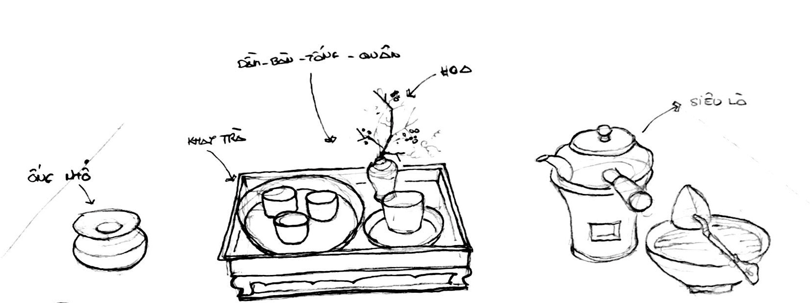
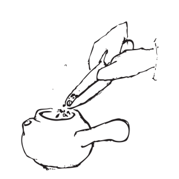
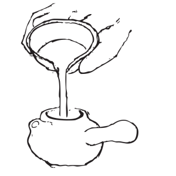
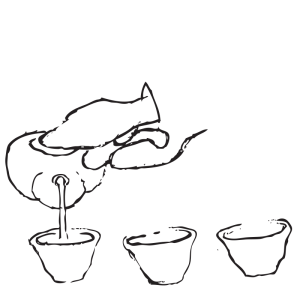
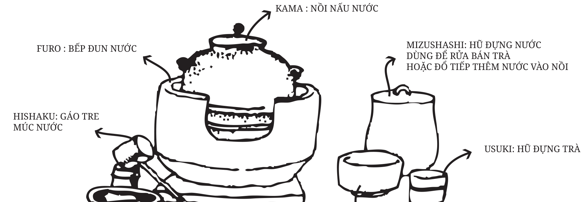
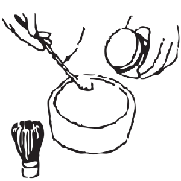
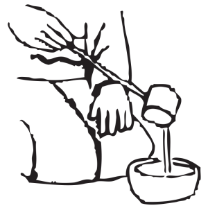
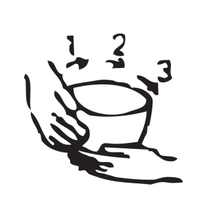

茶道-ベトナム
茶道は、精神的な価値観を考慮してお茶を飲むスタイルです。
事前に処方された茶道を通して、誰もが穏やかな妊娠でお茶を飲みました。
現在の瞬間で停止し、おいしいお茶を楽しみ、心の安らぎを感じてください。

✳︎お茶を入れる
特化したお茶は、小さなもの、ジャックフルーツカップ、
タンジェリンの温かさ、そして水質と沸騰の慎重な制御、
お茶を作る際の風味を最大化することの目標です。

ティーカードを使用して、ポットにお茶をすくいます

沸騰した水をケトルに注ぎ、ピッチを変えて圧力をかけ続け、茶繊維への影響を変えます

ポットからお茶を各カップに注ぎ、1/3カップずつ3回に分けます。
茶道-日本
日本茶道は、抹茶と呼ばれる特別な種類の茶粉を使用して、
15世紀にさかのぼる古代の儀式に従い、お湯で溶かして大きなボウルで撮影します。
禅師の利休によって設立された日本の茶道は、タオという言葉に焦点を当てており、
お茶を作る際の作業は非常に詳細に規定されています。

✳︎お茶を入れる

日本の茶道は抹茶と呼ばれる特別な粉末茶を使用しています

ポットからティーボウルに沸騰したお湯をすくいます
✳︎お茶を飲む

右手でティーボウルを時計回りに3回回します。
飲んだ後、右手でボウルの上部を拭いてください。 ボウルを反時計回りに回し、マスターティーに戻します。
PAGE TOP
PAGE TOP